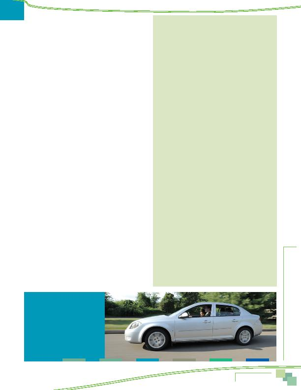

|

more difficult than it was a year ago. The primary reason for it being worse was that the route was more congested now (59%), but 14% said it was more difficult due to construction along the route to work. a shorter distance (34%), took less time (29%), or was less congested (26%). Eight percent said the commute was easier because they started using an alternative mode. Eleven percent said it was easier because construction along the route had ended. change in the past year. Two in ten of these respondents said they considered a commuting factor, such as the ease or cost of commuting to the new location, when making their location decision and nearly three in ten (29%) said commute ease was more important than other factors in the decision. decision: 1) respondents who lived in the Inner Core jurisdictions, 2) respondents who worked in the Middle Ring jurisdictions, and 3) respondents who moved from another location in the Washington region. Presumably, these three groups expected to encounter a more difficult commute with their move or wanted to improve their commute through the move. that provided service in the areas where they lived and worked. Nine in ten said bus and/or train operated in their home area; a similar percentage said service operated in the area where they worked. near their home and almost six in ten (59%) reported Metrobus in the area where they worked. Similar percentages said that Metrorail/subway operated in their home area (55%) and at work (60%). than ½ mile from a bus stop and 67% said they lived less than one mile. Train station access was less convenient; only 16% lived less than one mile from a train station. The average distances were 1.4 miles to the nearest bus stop and 6.4 miles to the nearest train station. Respondents who lived in the Inner Core jurisdictions of the District of Columbia, Alexandria, and Arlington said the closest bus stop was an average of 0.3 miles away and a train station was 1.5 miles away on average. Eighty-five percent of commuters in this area lived less than ½ mile from a bus stop. their route to work. A quarter (27%) of these commuters said they use the lanes. This equated to about nine percent of commuters region-wide, essentially the same percentages that reported HOV availability and HOV use in 2007. lanes for commuting said availability of the lanes influenced their decision to carpool, vanpool, or ride transit for their commute. This is borne out by a comparison of rideshare mode use with and without HOV. The carpool/vanpool mode share was 11% for commuters who had access to an HOV lane for commuting, compared to six percent carpool/vanpool use TRANSPORTATION OPTIONS, COMMUTE ASSISTANCE PROGRAMS, AND COMMUTE ADVERTISING respondents who used the HOV lanes for commuting said availability of an HOV lane influenced their decision to carpool, vanpool, or ride transit for their commute. |